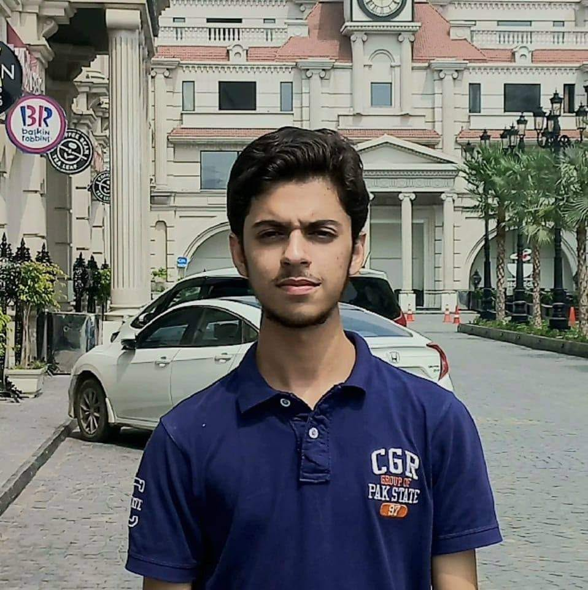

Muhammad Moosa Qureshi

Hi! I am a Computer Science undergraduate in İzmir, Türkiye, and the founder of S.A.F (South Asian Fitness), where I build real-time computer vision and AI systems using Python, FastAPI, and Next.js.
My background is grounded in algorithmic problem-solving, global mathematics competition rankings, and end-to-end systems engineering—from multimodal vision pipelines to zero-trust financial ledgers and retrieval-augmented generation (RAG) architectures[cite: 9].
My current engineering and research work revolves around:
- Multimodal Computer Vision & spatial food-density estimation (S.A.F)
- Hybrid RAG & Personal Knowledge Graphs using pgvector and Qdrant
- Zero-Trust FinTech Architecture with atomic double-entry ledgers
- Cloud-Native Infrastructure provisioned via Terraform on AWS